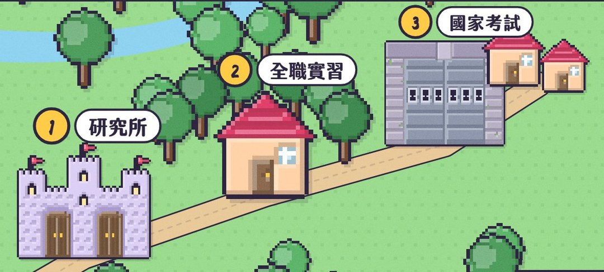
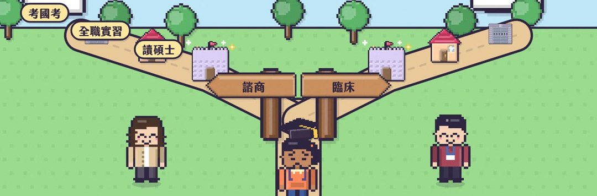
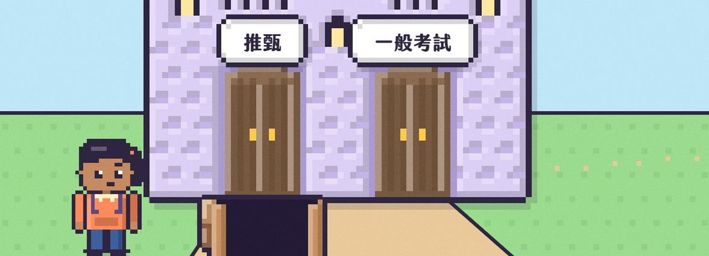
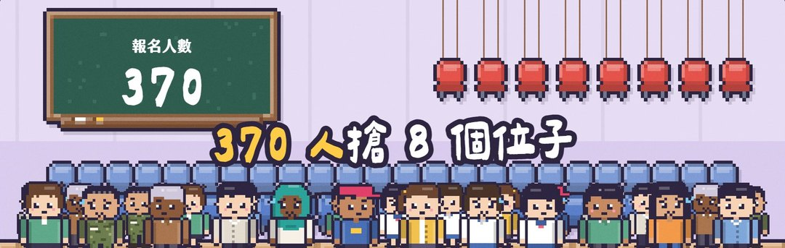
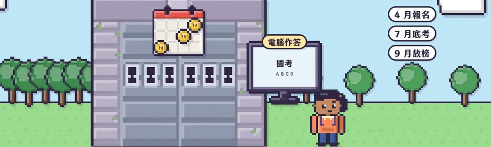
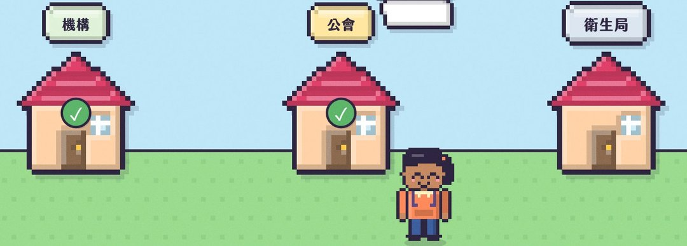

我要成為心理師 EP1 懶人包心理師之路
想當諮商心理師或臨床心理師，要過哪三關？每一關在做什麼、要念幾年、最難的是哪一關，這份一次看懂。
- 兩扇門
- 錄取率
- 怎麼報
- 研究所三年
- 實習一年
- 國考
- 考過以後
- 要幾年
想當心理師，要過三關

考上研究所：諮商或臨床心理的碩士班，大學念什麼系都可以
全職實習至少一年
考過國考，再申請證書、登記執業
心理系畢業 ≠ 心理師：要有證書才能這樣自稱。
兩種心理師關卡一樣，差在訓練重點：臨床以醫院實習為主、重心理衡鑑；諮商的場域比較多元、重怎麼陪人談。
研究所有兩扇門

- 9 月出簡章
- 9–10 月報名、交書審資料
- 書審過了才能面試
- 11–12 月放榜
- 11 月到隔年 1 月報名
- 1 月底到 3 月初筆試
- 很多學校還有口試
- 3 到 4 月放榜
- 日期各校不同
書審資料，很多心理師建議暑假前就開始準備。
最難的，就是第一關

113 學年 370 人報名、錄取 8 人
114 學年 354／8、115 學年 332／8
最多只有 16 人能進口試
大部分學校的錄取率是個位數。不過一個人通常報好幾間，這不是你考上的機率。
報幾間？兩扇門可以都走
推甄和考試可以同時報。而且推甄還沒放榜，考試就開始報名了（例：師大推甄 11/19 放榜，考試報名 11/20 截止），要先決定報不報。
報名策略大概三種：
目標型：只報幾間，因為喜歡它的特色
只報國立
能報的都報：先求有，再求好
照總成績排名。名額內是正取，後面是備取；正取的人放棄，備取才依序遞補，有的拖到隔年 2 月。
考上以後，最快也要三年
兼職實習
＋寫論文
沒寫完
- 修滿 21 學分：諮商 7 個領域 臨床3 個領域
- 兼職實習：每週約 8–24 小時，各校不同；開始接個案、帶團體，每週有督導
- 諮商：課全部修完才能去全職實習（學會規定，115 年起）
- 碩士論文：碩二提計畫、實習那年邊寫；口試沒過，拿不到學位、不能考國考
論文常寫不完：大部分人念三年半到四年。
實習一年，要做什麼？
- 自己找：碩二上看機構招募公告、寄履歷，寒假前後面試
- 全職、連續 43 週或 1,500 小時以上
臨床48 週或 1,920 小時以上 - 在哪裡：學校最多（約四分之三，大多是大專），也有醫院、社區、諮商所
- 一週約 32 小時：四天在機構、一天回學校；跟個案談話平均一週不到 8 小時
- 一定有人帶：每週至少 1 小時、全年至少 50 小時一對一督導
臨床沒有這條規定
有薪水嗎？絕大多數沒有。少數大專給鐘點費、有些社區給津貼；也有要繳實習費、督導另付一次一兩千。
國考：平均 60 分及格

- 資格：碩士學位＋實習證明；還沒畢業可以先報名（附條件應考）
- 一年一次：4 月報名、7 月底考、9 月放榜
- 六科，每科都有申論和測驗題；六科平均 60 分及格，但有一科零分（缺考也算）就不及格
臨床也是六科
諮商：79.3%、85.0%、81.8%
臨床：90.8%、83.3%、79.5%
（113、114、115 年，考選部）
考過了，還不能馬上上班

向衛福部申請心理師證書
找到工作的機構，加入當地心理師公會
到縣市衛生局辦執業登記
之後每 6 年要修滿 120 點繼續教育，才能換照。
要幾年？大學 4 年＋研究所最快 3 年＝最快 7 年；大部分人研究所念三年半到四年，通常 8 年左右。
完整影片在 YouTube
我要成為心理師 EP1 怎麼當心理師？370 人搶 8 個位子，最難的不是國考
▶ youtu.be/NSUUJPSnfE0
想先知道諮商在做什麼？看諮商新手村：
- EP1 免費諮商額度youtu.be/0aGlQ9jN3vw
- EP2 我又沒怎樣youtu.be/D152UbyrSnE
- EP3 諮商室 50 分鐘youtu.be/vuwDib6Ubjs
- EP4 合不來，可以換嗎youtu.be/l3s5pAkur14
- EP5 為什麼那麼貴youtu.be/Us1tdFvrckA
現在很難熬嗎？安心專線 1925（24 小時免付費）、生命線 1995、張老師 1980；有立即危險請撥 119 或 110。升學資訊以各校當年簡章為準。
IG、Threads @heart__atrium10 / 10